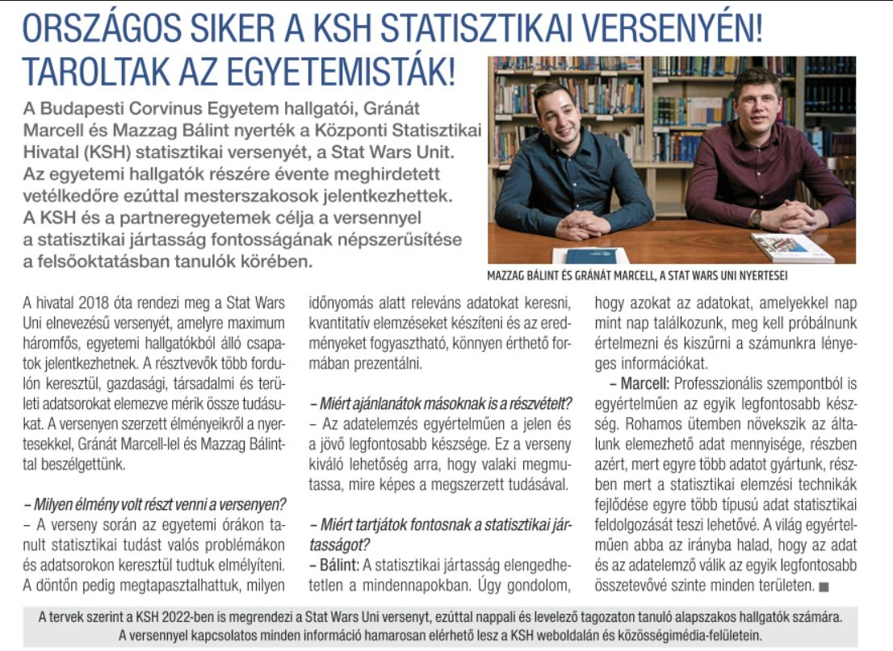

With my friend Bálint, we successfully won the 2021 “STAT WARS”, due to which we were also featured in a morning TV show and in newspapers
In 2021, the Central Statistical Office announced its data analysis competition for MSc students. Since my friend Balint Mazzag and I successfully won this, we had the opportunity to talk about our experiences and the importance of statistical knowledge in the Hungarian TV2 television channel’s morning show. Also thanks to this, we gave an interview to Figyelő.
Source: TV2

Source: LinkedIn